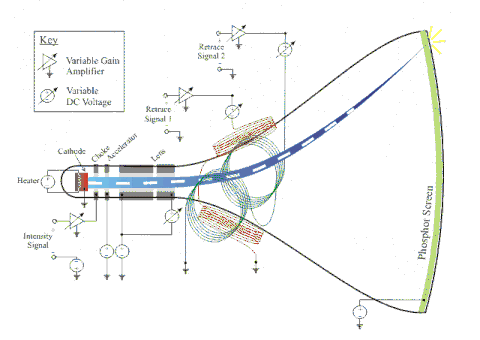
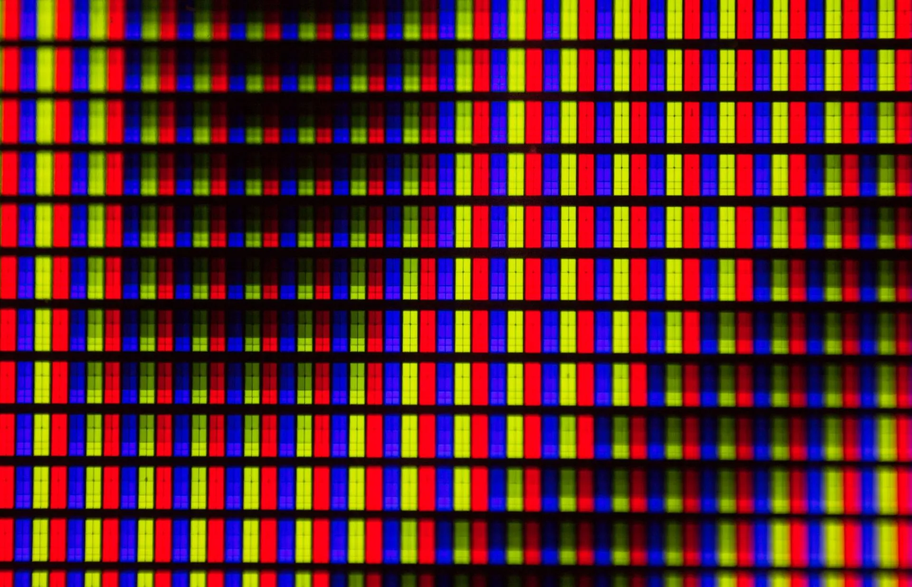

Mergi înapoi la pagina principală
Displayurile
Displayurile sunt dispozitive periferice de ieșire folosite pentru a arăta vizual date.
Istoric:
- Primele display-uri erau lumini care clipeau pentru a indica când monitorul procesa informațiile.
- Acestea au fost ulterior înlocuite de tuburi catodice, fiind folosite cele de la radar și osciloscop pentru a arăta vectori.
- Display-urile au evoluat, devenind monitoarele pe care le avem astăzi.
tipuri de display-uri:
- Displayurile cu tuburi catodice
-
- aceste display-uri contineau tunuri de electroni care emitau fascicule de electroni pentru a arata o imagine.

- au fost inlocuite de monitoare lcd din cauza consumului redus de energie,designului compact,si rezolutiei ridicate.
- lcd-uri
-
- Aceste display-uri conțin cristale care pot bloca lumina emisă în spatele lor.
- sunt cel mai popular tip de display,fiind iefitin si durabil

E Ink
- Aceste display-uri folosesc micro-capsule care conțin pigmenți albi și negri într-un lichid clar.
- Sunt folosite la citirea cărților electronice, deoarece folosesc energie doar când este schimbată imaginea și au proprietăți similare cu hârtia.